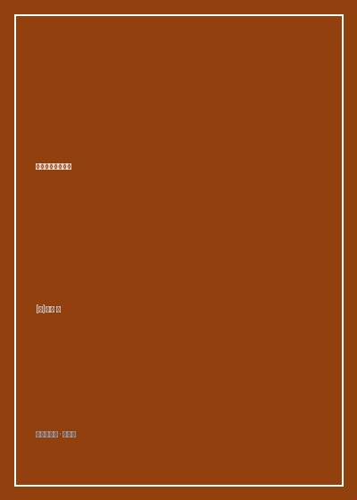

《两周自制脚本语言》

总体观点
编译原理绝非少数计算机天才垄断的高岭之花，而是一套逻辑自洽、每个程序员都能亲手实现的基础工程。《两周自制脚本语言》以'边做边学'（Learning by Doing）的敏捷范式，彻底粉碎了编译器的神秘光环。
全书采用精妙的面向对象设计模式对编译器各阶段解耦。从最初支持简单四则运算的计算器，到逐日扩展出变量环境、条件循环、函数闭包、类与对象乃至字节码虚拟机，展现了优雅架构应对复杂语言演进的惊人威力。
手写一门编程语言是对程序员底层心智模型的终极淬炼。深入理解语法树遍历、调用栈帧、作用域链与动态分派，能让开发者在日常编码与性能调优中拥有洞穿一切语法糖的透视眼。
核心观点
-
1. 词法与语法分析的流水线解耦：从源码文本到抽象语法树
Lexer利用正则表达式将源代码字符串切割为Token流，Parser利用组合子（Combinator）或递归下降法将Token流组装为AST树。
代码`total = 100 + 20`被解析为一个赋值表达式AST节点，左子节点为变量标识符`total`，右子节点为加法二叉树。 -
2. 环境对象与作用域链：变量查找的底层机制
变量存储本质上是一个链表结构的环境字典（Environment），内层作用域持有对外层作用域的引用，逐层向上查找变量绑定。
函数内部读取全局变量时，在当前局部变量表中查找未果，顺着outer指针向上在全局环境中命中值。 -
3. 闭包的本质是一颗绑定了诞生环境的函数AST
当函数作为一等公民被返回时，它不仅携带了自身的函数体代码，更捕获了其定义时所在的作用域环境，形成了闭包（Closure）。
实现计数器函数工厂：每次调用返回的新函数都私有持有一个独立的count环境变量，外界无法直接篡改。 -
4. 面向对象的动态分派实现：类本质上是环境的包装
对象实例本质上是一个私有的Environment，字段即环境中的局部变量，方法即环境中的函数闭包，通过this指针注入实现面向对象。
调用`cat.meow()`时，将cat对象的环境绑定为当前执行环境并传入this，完成多态方法的分派调用。 -
5. 解释执行到字节码虚拟机的性能飞跃：消除树遍历开销
直接遍历AST执行虽然直观但速度缓慢，将AST预编译为紧凑线性的操作码（Opcode），利用虚拟堆栈执行能带来数十倍的速度提升。
将`a + b`编译为指令序列`GET a; GET b; ADD; SAVE result`，利用栈式虚拟机在连续内存中极速跑通。
全书思维导图 · 知识脉络树
全书结构
-
第1天～第3天 词法分析与语法分析：手写Lexer与递归下降Parser
构建Stone语言的基础输入管道，编写正则表达式分词器，利用语法分析器组合子完成四则运算与赋值语句的解析。
通过数十行Java代码构建起能识别数字、标识符与字符串字面量的Token生成器，成功将代码转换为Token队列。 -
第4天～第6天 语法树构建与解释执行：抽象语法树（AST）的设计与求值
设计ASTNode层次体系，实现简单的解释器模式eval方法，完成支持if条件分支与while循环的计算器语言。
在ASTWhile节点中循环执行body.eval()直到condition.eval()返回false，实现基础图灵完备控制流。 -
第7天～第9天 作用域与函数实现：符号表、环境对象与闭包支持
引入NestedEnv环境类，支持函数定义与形参实参传递，使Stone语言支持高阶函数与闭包特性。
在Stone中跑通经典的递归斐波那契数列计算与闭包计数器测试代码，验证函数调用栈的正确弹出。 -
第10天～第12天 面向对象扩展：类、对象、字段与方法调用查找
为语言添加class语法，设计ClassInfo与ClassObject结构，实现继承体系与方法覆盖查找机制。
编写Point与ColorPoint子类代码，演示通过super关键字调用父类构造函数与重写toString方法的运行全过程。 -
第13天 虚拟机进化：基于字节码的栈式虚拟机设计
废弃低效的树遍历解释器，引入Opcode指令集与寄存器/堆栈虚拟机，大幅削减函数调用与运算开销。
设计LOAD、STORE、ADD等底层指令，通过一个巨大的switch-case事件循环让Stone程序执行速度提升五倍。 -
第14天 极致优化与展望：JIT编译与向工业级语言迈进
探索使用Java字节码库Javassist将Stone直接即时编译（JIT）为JVM底层原生指令，展望静态类型系统设计。
展示JIT优化后的Stone在密集计算循环中逼近原生Java运行速度的Benchmark基准测试结果。